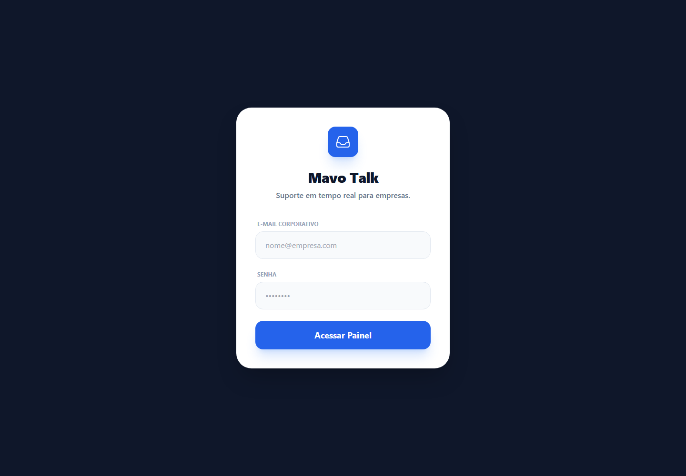
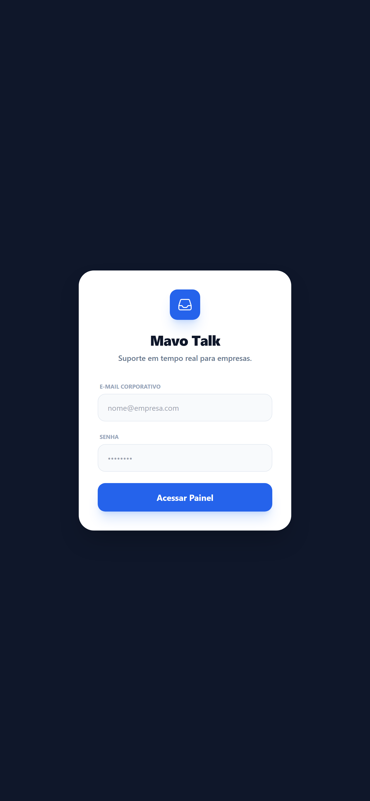
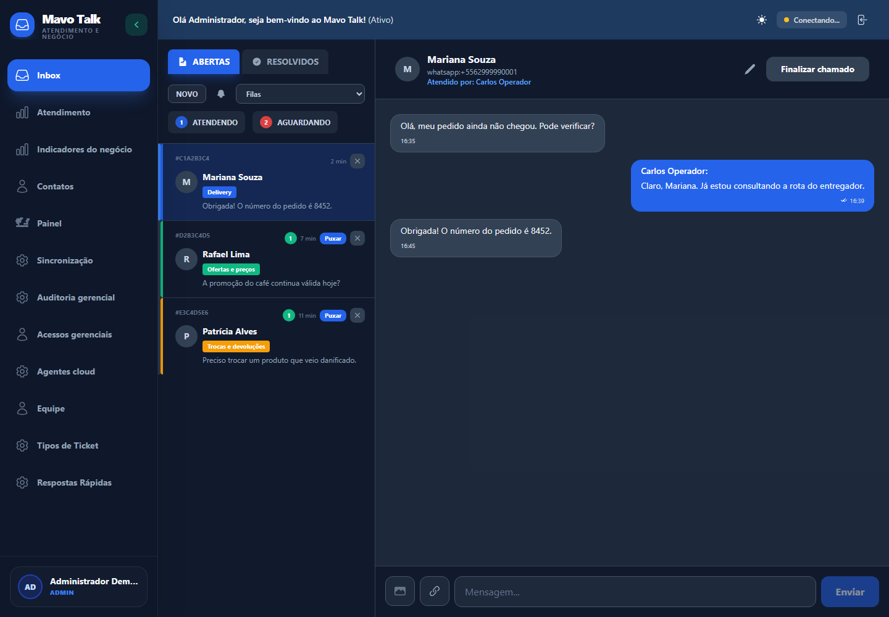
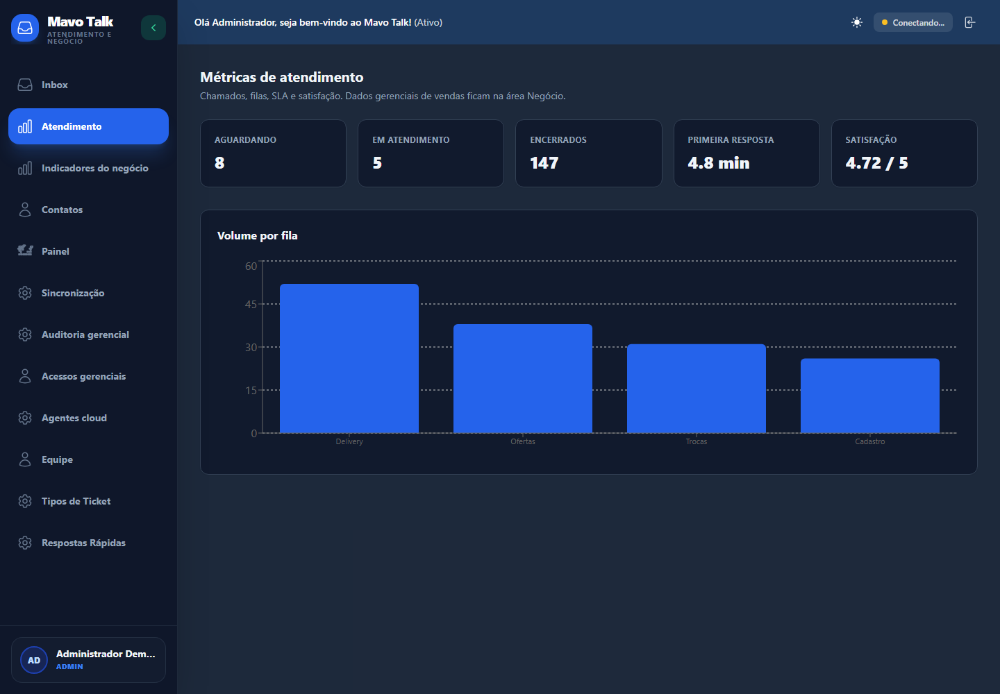
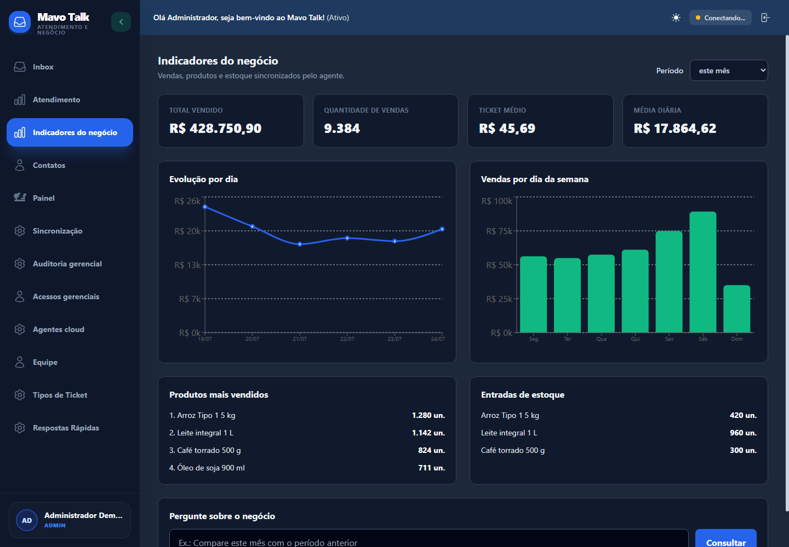
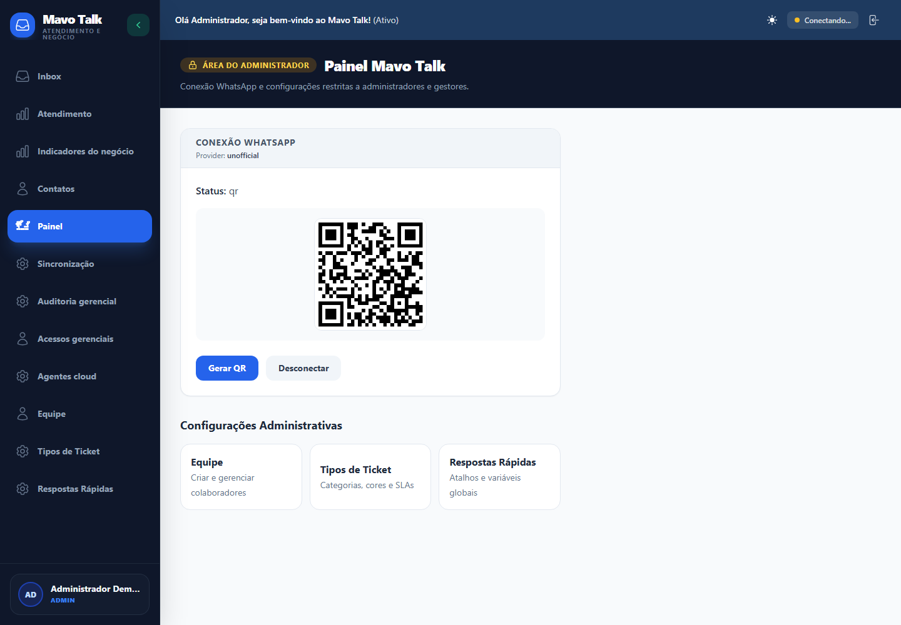

Versão do documento: 1.0
Data da revisão: 24 de julho de 2026
Escopo: frontend operacional, API, WhatsApp, bot de supermercado, sincronização gerencial, segurança, banco de dados e deploy Render/Supabase.
Este documento descreve o código efetivamente auditado na branch
main. As imagens marcadas como “demonstração” foram produzidas com o mesmo build do frontend e dados sintéticos, sem expor clientes, credenciais ou um QR real.
O WillTalk é uma plataforma multiempresa de atendimento e inteligência operacional para supermercados. O sistema concentra conversas do WhatsApp em tickets, executa triagem automática, distribui os atendimentos por filas, mantém histórico e SLA, expõe indicadores de atendimento e recebe dados comerciais por um agente instalado no ambiente do cliente.
Em produção existem três recursos principais:
mavo-talk-web: SPA React/Vite servida como site estático no Render.mavo-talk-api: Next.js com servidor HTTP próprio, Socket.IO, bot e workers inline.mavo-talk-key-value: Redis/Key Value usado para rate limiting, filas BullMQ e coordenação transitória.O dado durável fica no PostgreSQL do Supabase. O navegador nunca acessa o Supabase diretamente.

Figura 1 — Tela pública real do build auditado.
flowchart LR
U[Atendente / Gestor / Admin] -->|HTTPS + cookie HttpOnly| WEB[React + Vite]
WEB -->|REST / JSON| API[Next.js + servidor Node]
WEB <-->|Socket.IO autenticado| API
C[Cliente WhatsApp] <-->|Baileys por QR| API
T[Twilio opcional] <-->|Webhook assinado| API
API -->|SQL parametrizado| DB[(Supabase PostgreSQL)]
API -->|rate limit / BullMQ| REDIS[(Render Key Value)]
API -->|mídias| CLOUD[Cloudinary]
API -->|webhook com token| N8N[n8n / Cérebro]
AGENT[Agente do supermercado] -->|HMAC + idempotência| API
API --> BI[Indicadores gerenciais]
| Componente | Tecnologia | Responsabilidade |
|---|---|---|
| Frontend | React 19, Vite, Tailwind, React Router, Recharts | Login, Inbox, contatos, métricas, administração e indicadores |
| API | Next.js 16, Node.js 22, TypeScript | Autorização, domínio, webhooks, integrações e páginas administrativas |
| Servidor | server.cjs, HTTP nativo, Socket.IO |
CORS, WebSocket, ciclo de vida, workers inline e shutdown |
| Banco | PostgreSQL/Supabase | Dados transacionais, auditoria, analytics e sessão cifrada do WhatsApp |
| Repositório | lib/supabase-repo.ts |
Acesso multi-tenant ao banco; todas as operações recebem organizationId |
| Baileys | QR, recepção, envio e triagem sem Chromium | |
| Fallback | Twilio | Canal oficial opcional, webhook assinado e redundância de envio |
| Filas | BullMQ/Redis | Webhooks, SLA e limpeza controlada de mídia |
| Mídia | Cloudinary | Armazenamento e URLs assinadas verificadas contra organização e conversa |
| Agente cloud | HMAC-SHA256 + AES-GCM | Ingestão de vendas, produtos, estoque e heartbeat |
O login operacional chama POST /api/auth/login. Se as credenciais forem válidas, a API cria um JWT HS256 com issuer e audience fixos e o grava em cookie HttpOnly, Secure em produção e SameSite=None para o frontend separado da API. A SPA confirma a sessão em GET /api/me antes de mostrar qualquer área protegida; o valor em localStorage serve somente como cache visual e não concede acesso.

Figura 2 — Login responsivo, renderizado em viewport móvel.
A Inbox consulta as conversas da organização da sessão, separa tickets abertos e resolvidos, permite puxar ou finalizar atendimentos e recebe atualizações em tempo real. Uma mensagem otimista desaparece e um erro visível é exibido se o provedor não confirmar a entrega.

Figura 3 — Build real com fixture sintética. Nenhum telefone ou ticket pertence a cliente real.
Gestores e administradores veem tickets aguardando, em atendimento e encerrados, tempo médio da primeira resposta, satisfação e volume por fila. A autorização é aplicada no frontend e novamente na API.

Figura 4 — Métricas demonstrativas; valores não representam a produção.
O agente cloud envia lotes diários de vendas, itens vendidos e entradas de estoque. O backend valida versão, assinatura, nonce, timestamp, checksum e chave de idempotência antes de gravar. O painel oferece séries temporais, ticket médio, produtos, estoque e consulta gerencial auditada.

Figura 5 — Dados comerciais sintéticos usados apenas para documentação.
Somente admin e gestor acessam status, telefone conectado, QR e comandos de conexão. O QR abaixo é deliberadamente inválido e contém apenas um marcador de documentação.

Figura 6 — Fluxo visual de conexão; não é uma sessão real do WhatsApp.
No mobile, a barra lateral vira drawer, a lista e a conversa ocupam a largura completa em estados alternados e existe ação explícita para voltar à lista. O teste visual executado em 390 px confirmou scrollWidth=390, sem overflow horizontal.
Figura 7 — Conversa em viewport móvel, usando o build auditado.
sequenceDiagram
participant Cliente
participant Baileys
participant Router as Roteador de negócio
participant Upsert as Ticket upsert
participant DB as Supabase
participant Bot as Bot supermercado
participant UI as Inbox
Cliente->>Baileys: mensagem ou mídia
Baileys->>Router: telefone, texto e identificador
Router->>Router: decide acesso gerencial ou suporte
Router->>Upsert: evento autenticado interno
Upsert->>DB: verifica contato bloqueado e duplicidade
Upsert->>DB: cria contato + novo protocolo, se necessário
Upsert->>DB: persiste mensagem inbound
Upsert->>Bot: classifica intenção/fila
Bot->>DB: atualiza triagem, fila e SLA
Upsert-->>UI: Socket.IO na sala da organização
Bot-->>Cliente: resposta automática confirmada
Regras importantes:
external_id evita duplicidade;sequenceDiagram
participant UI as Inbox
participant API
participant WA as WhatsApp/Twilio
participant DB as Supabase
participant RT as Socket.IO/Webhook
UI->>API: POST mensagem + cookie
API->>DB: valida conversa dentro do tenant
API->>DB: verifica contato bloqueado
API->>WA: envia texto assinado pelo atendente
alt entrega confirmada
WA-->>API: externalId
API->>DB: persiste mensagem
API-->>RT: message.created / ticket.updated
API-->>UI: 201
else falha ou canal indisponível
API-->>UI: 503 sanitizado
UI->>UI: remove otimista e mostra erro
end
A persistência ocorre somente depois da confirmação externa. Isso impede que o histórico declare como enviada uma mensagem que nunca saiu.
publicId + conversationId e confirma que a mídia pertence à organização autenticada.| Estado | Significado | Transição típica |
|---|---|---|
pendente_cliente |
Bot ainda coleta informação | mensagem/seleção do cliente |
aguardando |
Pronto para uma fila humana | conclusão da triagem |
em_atendimento |
Atendente assumiu ou respondeu | POST /assign ou envio |
encerrado |
Atendimento finalizado | POST /close |
Fechar o ticket preserva mensagens e mídia. Exclusão de mídia deve obedecer uma política de retenção separada; ela não é mais vinculada ao fechamento operacional.
| Sigla | Mecanismo |
|---|---|
| P | Público ou idempotente, sem dado sensível |
| U | Cookie de sessão operacional; tenant obtido do JWT |
| G | Cookie operacional + papel admin ou gestor |
| A | Cookie operacional + papel admin |
| M | Cookie master separado, usado somente em /mavo |
| H | Credencial do agente + HMAC, timestamp, nonce e versão |
| W | Webhook: bearer token ou assinatura do provedor |
Princípios aplicados:
/api/me antes de entrar na sala organization:<id>;| Método | Rota | Acesso | Função |
|---|---|---|---|
| POST | /api/auth/login |
P | Autentica usuário, aplica rate limit e cria cookie |
| POST | /api/auth/logout |
P | Limpa o cookie operacional |
| GET | /api/me |
P/U | Retorna usuário da sessão ou null para o probe da SPA |
| GET | /api/health |
P | Liveness: API, banco, Redis, WhatsApp e versão |
| GET | /api/readiness |
P | Readiness do banco e Redis; retorna 503 se indisponível |
| POST | /api/ai/support-assist |
U | Sugestão/resumo por IA, com rate limit e timeout |
| Método | Rota | Acesso | Função |
|---|---|---|---|
| GET | /api/conversations |
U | Lista conversas, contatos, ticket e mensagens do tenant |
| POST | /api/conversations/:id/assign |
U | Assume ticket e registra primeira resposta |
| POST | /api/conversations/:id/close |
U | Encerra ticket e opcionalmente envia pesquisa |
| POST | /api/conversations/:id/messages |
U | Envia e persiste texto após confirmação do canal |
| POST | /api/conversations/:id/messages/upload |
U | Valida, envia e persiste imagem |
| POST | /api/conversations/:id/typing |
U | Publica presença de digitação na sala do tenant |
| GET | /api/contacts |
U | Lista contatos e última interação |
| PATCH | /api/contacts/:id |
U | Atualiza nome, telefone, bloqueio e nota interna |
| POST | /api/contacts/:id/start-conversation |
U | Cria ou obtém conversa aberta |
| GET | /api/media/signed |
U | Redireciona para mídia assinada após checagem de posse |
| GET | /api/queues |
U | Lista filas |
| POST | /api/queues |
G | Cria fila |
| PATCH | /api/queues/:id |
G | Atualiza fila, SLA, cor e estado |
| POST | /api/queues/supermarket-preset |
G | Aplica preset de filas do supermercado |
| GET | /api/quick-replies |
U | Lista respostas rápidas |
| POST | /api/quick-replies |
G | Cria resposta rápida global |
| PATCH | /api/quick-replies/:id |
G | Atualiza resposta rápida |
| DELETE | /api/quick-replies/:id |
G | Remove resposta rápida |
| GET | /api/dashboard/metrics |
G | Métricas gerenciais de atendimento |
| Método | Rota | Acesso | Função |
|---|---|---|---|
| GET | /api/admin/users |
A | Lista equipe ativa |
| POST | /api/admin/users |
A | Cria usuário |
| PATCH | /api/admin/users/:id |
A | Atualiza usuário sem permitir lockout do último admin |
| DELETE | /api/admin/users/:id |
A | Desativa usuário |
| GET | /api/admin/system-status |
G | Status sanitizado de serviços, agentes e versão |
| GET | /api/admin/agents |
G | Lista instalações do agente cloud |
| POST | /api/admin/agents/provision |
A | Provisiona agente e revela segredo uma vez |
| POST | /api/admin/agents/:id/rotate-credential |
A | Rotaciona credencial |
| POST | /api/admin/agents/:id/revoke |
A | Revoga agente |
| GET | /api/admin/business-access |
A | Lista acessos gerenciais |
| POST | /api/admin/business-access |
A | Cria acesso/PIN gerencial |
| PATCH | /api/admin/business-access/:id |
A | Atualiza acesso |
| DELETE | /api/admin/business-access/:id |
A | Revoga acesso |
| POST | /api/admin/business-access/:id/reset-pin |
A | Redefine PIN |
| POST | /api/admin/business-access/:id/revoke-sessions |
A | Revoga sessões ativas |
| POST | /api/admin/business-access/:id/unlock |
A | Remove bloqueio por tentativas |
| Método | Rota | Acesso | Função |
|---|---|---|---|
| GET | /api/whatsapp/status |
G | Estado, QR, persistência e diagnóstico |
| POST | /api/whatsapp/connect |
G | Inicializa/reconecta Baileys |
| POST | /api/whatsapp/disconnect |
G | Encerra a sessão de forma controlada |
| POST | /api/webhooks/twilio |
W | Recebe mensagens/status com assinatura Twilio |
| POST | /api/webhooks/n8n/ticket-upsert |
W | Upsert idempotente, triagem e roteamento |
| POST | /api/webhooks/cerebro/reply |
W | Resposta automática do Cérebro com bearer token |
| Método | Rota | Acesso | Função |
|---|---|---|---|
| GET | /api/agent/v1/config |
H | Entrega configuração e próximo intervalo |
| POST | /api/agent/v1/heartbeat |
H | Atualiza vida, versão e status do agente |
| POST | /api/agent/v1/sync/sales-daily |
H | Ingestão idempotente de vendas diárias |
| POST | /api/agent/v1/sync/product-sales |
H | Ingestão idempotente de vendas por produto |
| POST | /api/agent/v1/sync/inventory-entries |
H | Ingestão idempotente de entradas de estoque |
| GET | /api/business/analytics |
G | Agregações por período, produto e dia |
| POST | /api/business/query |
G | Consulta gerencial com auditoria e rate limit |
| GET | /api/business/audit |
A | Auditoria das consultas e acessos |
| Método | Rota | Acesso | Função |
|---|---|---|---|
| POST | /api/mavo/auth/login |
P | Login master separado, com bloqueio por IP |
| POST | /api/mavo/auth/logout |
P | Limpa cookie master |
| GET | /api/mavo/overview |
M | Visão de saúde e pendências de configuração |
| POST | /api/mavo/actions/sync-supermarket |
M | Reaplica preset do supermercado |
Páginas do backend: /mavo é o console master; /, /login, /dashboard e /dashboard/queues redirecionam para o frontend canônico em produção.
| Domínio | Tabelas |
|---|---|
| Tenant e usuários | organizations, users, audit_logs, business_hours, channels |
| Atendimento | contacts, queues, conversations, tickets, messages, quick_replies |
| Acesso gerencial | business_access_users, business_access_sessions, business_access_audit, business_whatsapp_events, business_query_audit |
| Agente cloud | agent_installations, agent_credentials, agent_nonces, agent_sync_batches, agent_audit_events |
| Analytics | business_sales_daily, business_product_sales_daily, business_inventory_entries_daily |
whatsapp_auth_state |
|
| Migrações | mavo_schema_migrations |
As tabelas de negócio carregam organization_id. As migrations ativam RLS e criam políticas baseadas em mavo_current_organization_id(). A aplicação também filtra explicitamente por organização em selects e updates, oferecendo defesa em profundidade.
whatsapp_auth_state guarda somente conteúdo cifrado com AES-256-GCM. A chave de produção vem de WHATSAPP_AUTH_ENCRYPTION_KEY, com fallback de derivação estável do JWT apenas para compatibilidade de rollout. Trocar a chave com sessão existente torna o estado ilegível e exige novo QR.
Ordem atual:
202607230000_base_support_schema.sql202607230001_business_access.sql202607230002_agent_cloud.sql202607230003_business_analytics.sql202607230004_rls_policies.sql202607230005_indexes.sql202607240006_whatsapp_auth_state.sql202607240007_protect_last_admin.sqlnpm run db:migrate usa checksum e não reaplica arquivos já registrados. Nunca edite uma migration aplicada; crie a próxima.
| Grupo | Variáveis |
|---|---|
| Banco | DB_PROVIDER=supabase, DATABASE_URL_RUNTIME, DATABASE_URL_MIGRATIONS, PG_SSL=true |
| Sessão | JWT_SECRET com pelo menos 32 caracteres, SESSION_COOKIE_NAME, SESSION_COOKIE_SAME_SITE |
| Rede | FRONTEND_URL, MAVO_ALLOWED_ORIGINS, MAVO_API_PUBLIC_URL |
| Redis | REDIS_URL, MAVO_QUEUE_ENV |
| Tenant | DEFAULT_ORG_ID, WILLTALK_WEBHOOK_ORGANIZATION_ID |
| WhatsApp QR | WHATSAPP_PROVIDER=unofficial, WHATSAPP_AUTH_STORE=database, WHATSAPP_AUTH_ENCRYPTION_KEY, WHATSAPP_SESSION_NAME |
| Agente | MAVO_AGENT_CREDENTIAL_ENCRYPTION_KEY com 32 bytes em base64 |
| Master | MAVO_MASTER_EMAIL, MAVO_MASTER_PASSWORD ou hash |
Preencher SUPERMARKET_NAME, endereço, link do mapa, horários, ofertas, pedidos, delivery e telefone. Quando um campo está ausente, o bot encaminha a uma pessoa. Consulte BOT-SUPERMERCADO.md.
TWILIO_*: fallback oficial;CLOUDINARY_*: upload de mídia;MAVO_AI_BASE_URL e MAVO_AI_TOKEN: assistência externa;VISION_*: análise de imagem;CEREBRO_*: orquestração e auto-reply.Nenhum segredo deve usar prefixo VITE_; tudo que começa com esse prefixo entra no bundle público.
O Blueprint está em render.yaml e executa:
npm ci --include=dev
npm run typecheck
npm test
npm run lint
npm run build
npm run db:migrate
npm run db:bootstrap:production
npm run db:verify
O bootstrap garante a organização padrão de modo idempotente. db:verify falha quando faltam tabelas ou RLS; a existência da organização padrão deixa de bloquear o primeiro deploy porque o bootstrap roda antes.
O frontend executa typecheck e build Vite. Os dois serviços recebem headers de segurança, incluindo HSTS, CSP, frame-ancestors 'none', nosniff, Referrer Policy, Permissions Policy e COOP.
Consulte DEPLOY-SUPABASE-RENDER.md para o passo a passo.
O plano atual é adequado para homologação ou produção controlada, mas não oferece SLA de varejo:
Para operação 24x7, usar instância paga sempre ativa, Redis persistente e worker separado. Um monitor externo reduz cold start, mas não substitui SLA.
Controles implementados na revisão:
O audit do frontend aponta a advisory de React Router para RSC Mode. Esta aplicação é uma SPA Vite em modo declarativo e não usa RSC, framework mode, server actions ou loaders no servidor; portanto o vetor não é aplicável ao runtime atual. A versão permanece em 7.18.x porque ela contém as correções de open redirect das versões anteriores. A exceção deve ser reavaliada em todo upgrade ou se o frontend migrar para RSC.
| Verificação | Endpoint/ação | Resultado saudável |
|---|---|---|
| Liveness | GET /api/health |
HTTP 200, banco conectado |
| Readiness | GET /api/readiness |
HTTP 200, banco e Redis conectados |
| Sistema | GET /api/admin/system-status |
serviços e agentes sem erro |
GET /api/whatsapp/status |
ready; qr exige leitura |
|
| Banco | npm run db:verify |
sem tabela/RLS ausente |
| Blueprint | npm run render:validate |
schema válido |
| Logs | Render API | sem loop de reconnect, 5xx ou falha de migration |
O shutdown trata SIGTERM/SIGINT, fecha workers e Redis e chama end() no socket Baileys. O timeout do processo é o último fallback.
| Etapa | Resultado em 24/07/2026 |
|---|---|
| Testes Node | 70 aprovados, 0 falhas |
| TypeScript backend | aprovado |
| TypeScript frontend | aprovado |
| ESLint | 0 erros, 0 warnings |
| Build Next.js | aprovado; 39 páginas/rotas geradas |
| Build Vite | aprovado; chunks e assets gerados |
| Blueprint Render | válido |
| Audit produção backend | 0 vulnerabilidades |
| Audit frontend | advisory RSC não aplicável, documentada acima |
| Visual desktop | login, Inbox, métricas, negócio e WhatsApp inspecionados |
| Visual mobile | 390 px, sem overflow horizontal |
Os testes de regressão cobrem: falha de entrega antes da persistência, limite e cleanup de upload, isolamento de mídia, protocolo novo após encerramento, bloqueio nos três canais, restrição do QR, shutdown Baileys, proteção de administradores e métricas gerenciais.
As capturas podem ser reproduzidas com scripts/generate-doc-screenshots.mjs, usando Chrome com CDP e um frontend local. O script intercepta somente a execução de documentação e usa fixtures sintéticas.
qrready;DATABASE_URL_RUNTIME, PG_SSL=true e pooler;REDIS_URL;npm run db:verify contra o mesmo banco;SUPERMARKET_*;SUPERMARKET_BOT_ENABLED=true;Idempotency-Key;RPO e RTO devem ser definidos pelo contratante. O código não substitui uma política de backup da infraestrutura.
/api/health e /api/readiness em HTTP 200.db:verify aprovado.SUPERMARKET_* preenchidas com dados confirmados pela loja.ready.render.yaml — infraestrutura declarativa;.env.example e frontend/.env.example — contrato de configuração;supabase/migrations/ — schema versionado;lib/config/runtime-env.cjs — validação fail-fast;lib/supabase-repo.ts — repositório multi-tenant;lib/whatsapp-client.ts — integração Baileys;app/api/ — rotas descritas neste catálogo;